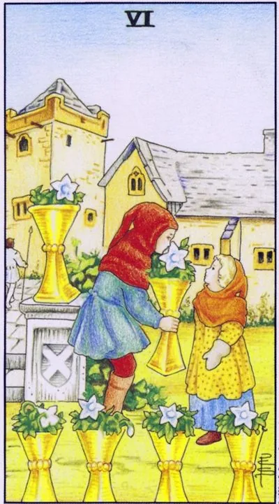

Minor Arcana · Cups
VISix of Cups
The Garden of Childhood: Warm Memories, Innocent Joys and a Gift from the Past
Archetype and core meaning
In the old garden, children exchange bowls of white flowers, one handing out a gift, another with serious gratitude, so children play adult without knowing the calculation, the scene smells of summer and syrup: a memory of a time when happiness was simple.
The six cups are a card of nostalgia, childhood memories and past gifts: a meeting with a school friend, a grandmother's house, a letter from a forgotten person. It talks about kindness without back-thinking and what roots nourish: to understand the present, sometimes you have to go back to where it all began.
Daily life
The reason to get a box of photos is to go to your hometown, to visit the old people, to eat a meal from the children's menu, simple joys work better than entertainment, ice cream, swings, play in the yard, show the children the backyards of your youth and tell them what the world was like then.
Work and career
It's going to come in handy with the first-earning experience, the student projects, the long-standing fascination, maybe going back to your old employer, or reviving an idea that was ahead of time, and thanking your first mentor and sharing it with newcomers -- generosity to the past is paid for by trust.
Relationships
Romance with history: the former writes years later, the classmate turns out to be a neighbor, the old feeling flashes back again - already grown up, but recognizable. For stable couples, the card gives a gentle simplicity: hands, laughing at shared memories, plans, as in the beginning.
Health
It's good for the psyche to go back to safety: memories where you were loved really reduce stress. Playing, creativity without a purpose, unplanned laziness are good for the psyche. Watch your teeth and back: the food excesses of children are not easily absorbed by the body.
Spiritual meaning
A card of the family memory: the intergenerational bond, the invisible support of ancestors, a legacy waiting to be recognized, used to gently heal childhood trauma through the image of a safe garden. A reminder: innocence is not naivety, but the ability to trust the world with sight; a skill for life.
It is time to grow out of the old garden: life in memories interferes with the present, childhood requires to let go.
Archetype and core meaning
The inverted bowls shed flowers: the past stopped feeding and began to suck; the person lives in the museum of his youth and measures the present by the standards of that time; the pink haze is convenient: there are no accounts, no conflicts and no binding decisions.
This is a card of childhood separation: growing up, leaving the parental home, ending a period that has been delayed beyond deadlines, sometimes it indicates unlived old pain that must be addressed without softening filters. The card is fair: the garden is beautiful, but you have to live behind its gate.
Daily life
The house reminds us of separation: the question of moving, the decisions that mom used to make, the adult children should stop waiting for approval for every step, parents should let go, Discuss the things of the past: boxes stored for twenty years require either a shelf or a bag.
Work and career
The end of apprenticeship: the role of the perpetual intern is tight, old developments do not cover new tasks, you can leave your place of residence. The mistake is choosing a job because it was good there: the atmosphere is not a criterion; does your salary and profession grow there?
Relationships
Relationships stall when both play childish roles: whims instead of asking, the expectation that the partner will become a parent; the possibility of graduating an old story is not a tragedy, but the end of a chapter; couples should build their own way of life, not copy someone's family script.
Health
You can see past stagnation in your body: sleep before lunch, sweet as comfort, childhood sickness for no reason, your body asks for adult exercise, exercise, schedule, and scheduling. Get a medical exam: part of your "weak childhood health" is just not taking care of yourself.
Spiritual meaning
Rite of Initiation: The child's ego must die for an adult magician to be born. The work involves an honest inventory of childhood wounds without blaming the parents and abandoning the "I'm not loved" attitude. As long as the inner child commands the parade, the force drains into old plots; once initiated, it becomes yours.
🌿 How the school reads this rank
The main idea
It's a selfless transmission of joy. You have a lot of joy, so you can share it just for the sake of someone else.
How it manifests
In society, friendliness, smiles and easy communication; in relationships, the desire to please your loved one without asking for an answer; the card is related to family, childhood friends and emotional security.
The shadow side
Other people’s emotions are imposed, and nostalgia turns into anguish or an instrument of pressure.
Keywords
Joy · friendship · childhood · family · safety
📜 In detail — from the rank lecture
Essence of the card
"share your emotions with another person ... just out of kindness of heart, because you have this joy in bulk." The action is a bouquet: you can't feed flowers, you give joy; the boy grows flowers in pots himself and gives the girl - like a merchant with watermelons: "Take, let you also have a little joy."
Upright position
- Social: small talk, joke about the weather, smile to the seller – non-compulsory emotional interaction; childhood friends, “together in kindergarten went.”
- Relationships: please a dear person without a demand for an answer (“not because you want to earn, but because you want to please”); relatives and relatives – an environment of “emotional security”.
- Work: Support is appropriate, but in numbers – “minimum emotions” (otherwise inverted).
- Self-development: learning to come out of the sad five, “share this way” – transfer the ability to rejoice.
- Symbolism: the garden with the guard - "forbidden / hidden garden", a symbol of security; white flowers - "purity of thoughts, unsullied by the material world", selflessness; a slanted cross on the cup - the cross of Andrew the First-Called, a hint of family ties ("he came to God first - bring your brother").
Negative meaning
• Emotions impose – a person “pushes a whole box of emotions on you that you do not want to experience”; can not protect yourself from the experiences of a colleague; advice from relatives “whom you did not ask for”; debts “for old friendship”; nostalgia becomes longing for the past (“and the minuses we somehow do not remember”).
School emphases and distinctive points
- “Wait did not draw much for nothing”: the scales of the merchant refer to Justice and “a balanced decision”.
- The animals in the cards are “our animal aspirations”; the color of the horse encodes the motif (white is the light side, black is the selfish side).
- Color code: red - matter ("red rose - emblem of the material world", wine - blood of Christ), white - spirit ("water from the wound of Christ" with a spear of fate); white flowers - unselfishness.
- Slavic series: sayings, compassionate grandmothers, “plombir 20 kopecks”; Soviet cartoons – an uncle from the factory of gutalin (“sends someone without getting hit”) and a cartoon about a bouquet (“for what?” – “just so!”).
- Modern images: Google (“he can’t Google”), Facebook, slipping friends, comments “School of Modern Tarot, you are the best tarologist” as an illustration of an inverted six wands.
- Techniques: argue with the classic correctly ("I do not use the author of the book, give my vision"); anti-detailing - "simplify... details can distort the general meaning"; "history is an example, not an instruction"; chess pattern and the baton of the triumphant without leaves - only hypotheses.
Keywords
Selfless joy, “share emotions”, relatives and friends of childhood, nostalgia, a safe garden.